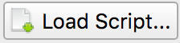
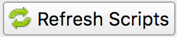

Scripting Capabilities¶
Porymap is extensible via scripting capabilities. This allows the user to write custom JavaScript (technically, ECMAScript) files to support enhanced workflows, without having to fork Porymap itself. While the possibilities are endless, some useful examples of scripting might be:
- Toggle Day/Night Palettes
- Custom Map Painting Brushes
- Detect Tile Errors
- Show Diagonistic Information
- Procedurally Generated Maps
- Randomize Grass Patterns
Custom Scripts Editor¶
Your custom scripts can be managed with the Custom Scripts Editor accessible under Options -> Custom Scripts....
{kind=link}
Custom Scripts Editor
- At the top there are three basic buttons for managing your scripts:
 Opens a prompt to create a new script file, which will be populated with a basic template.
Opens a prompt to create a new script file, which will be populated with a basic template.-  Lets you add an existing script file to Porymap that you’ve already created or downloaded from elsewhere.
-  Any edits made to your scripts while Porymap is already open will not be reflected until you select this button.
{kind=link}
{kind=link}
Below these buttons is a list of all the custom scripts you have loaded for your project. Each entry will have a text box showing the path of the script file. This path can be freely updated, or you can choose a new path with the  button next to it. The
button next to it. The  button will open the script file in your default text editor, and the
button will open the script file in your default text editor, and the  button will remove it from the list. The check box to the left of the filepath indicates whether your script should be running. If you’d like to temporarily disable a script you can uncheck this box.
button will remove it from the list. The check box to the left of the filepath indicates whether your script should be running. If you’d like to temporarily disable a script you can uncheck this box.
Writing a Custom Script¶
Let’s write a custom script that will randomize grass patterns when the user is editing the map. This is useful, since it’s cumbersome to manually add randomness to grass patches. With the custom script, it will happen automatically. Whenever the user paints a grass tile onto the map, the script will overwrite the tile with a random grass tile instead.
First, open the Options -> Custom Scripts... window and select the button. This will open a file save prompt; let’s name our new script file my_script.js and save it. We’ve successfully added a new script! We can now see it listed in the editor.

At the moment our script doesn’t do anything. Let’s select the button to open it and write the actual code that will power the grass-randomizer. Once the script file is open you will notice that there are several empty functions already inside. These are special “callback” functions that will be called automatically for certain events that occur while Porymap is running. We’re interested in the onBlockChanged() callback, since we want our script to take action whenever a user paints a block on the map.
// Porymap callback when a block is painted.
export function onBlockChanged(x, y, prevBlock, newBlock) {
// Grass-randomizing logic goes here.
}
We can leave the rest of the callback functions in here alone, or we can delete them because we’re not using them. Every callback function does not need to be defined in your script. Note: For Porymap to be able to execute these callback functions they need to have the export keyword. The rest of the functions in your script do not need this keyword.
In addition to the callbacks, Porymap also supports a scripting API so that the script can interact with Porymap in interesting ways. For example, a script can change a block or add overlay text on the map. Since we want to paint random grass tiles, we’ll be using the map.setMetatileId() function. Let’s fill in the rest of the grass-randomizing code.
Note
For pokeemerald/pokeruby users: We only have 1 regular grass metatile, but if you want to try this script you could replace const grassTiles = [0x8, 0x9, 0x10, 0x11]; in the code below with const grassTiles = [0x1, 0x4, 0xD]; to randomize using tall grass and flowers instead!
function randInt(min, max) {
min = Math.ceil(min);
max = Math.floor(max);
return Math.floor(Math.random() * (max - min)) + min;
}
// These are the grass metatiles in pokefirered.
const grassTiles = [0x8, 0x9, 0x10, 0x11];
// Porymap callback when a block is painted.
export function onBlockChanged(x, y, prevBlock, newBlock) {
// Check if the user is painting a grass tile.
if (grassTiles.indexOf(newBlock.metatileId) != -1) {
// Choose a random grass tile and paint it on the map.
const i = randInt(0, grassTiles.length);
map.setMetatileId(x, y, grassTiles[i]);
}
}
Let’s apply our changes by selecting the button. Because we’ve added a new script we’ll be met with this confirmation prompt. Accept this prompt by selecting YES.

Now let’s test our script! If we try to paint grass on the map, we should see our script inserting a nice randomized grass pattern.
Grass-Randomizing Script
Registering Script Actions¶
The grass-randomizer script above happens implicitly when the user paints on the map. However, other times we probably want to call the custom script on demand. One of the API functions Porymap provides is the ability to trigger scripting functions from the Tools menu, or a keyboard shortcut. To do this, we will usually want to register the action when the project loads. Here is an example script where some custom actions are registered.
export function applyNightTint() {
// Apply night palette tinting...
}
// Porymap callback when project is opened.
export function onProjectOpened(projectPath) {
utility.registerAction("applyNightTint", "View Night Tint", "T")
}
Then, to trigger the applyNightTint() function, we could either click Tools -> View Night Tint or use the T keyboard shortcut. Note: Like callbacks, functions registered using utility.registerAction() also need the export keyword for Porymap to call them.
Now that we have an overview of how to utilize Porymap’s scripting capabilities, the entire scripting API is documented below.
Scripting API¶
Callbacks¶
-
onProjectOpened(projectPath)¶ Called when Porymap successfully opens a project.
Arguments: - projectPath (string) – the directory path of the opened project
-
onProjectClosed(projectPath)¶ Called when Porymap closes a project. For example, this is called when opening a different project.
Arguments: - projectPath (string) – the directory path of the closed project
-
onMapOpened(mapName)¶ Called when a map is opened.
Arguments: - mapName (string) – the name of the opened map
-
onBlockChanged(x, y, prevBlock, newBlock)¶ Called when a block is changed on the map. For example, this is called when a user paints a new tile or changes the collision property of a block.
Arguments: - x (number) – x coordinate of the block
- y (number) – y coordinate of the block
- prevBlock (object) – the block’s state before it was modified. The object’s shape is
{metatileId, collision, elevation, rawValue} - newBlock (object) – the block’s new state after it was modified. The object’s shape is
{metatileId, collision, elevation, rawValue}
-
onBorderMetatileChanged(x, y, prevMetatileId, newMetatileId)¶ Called when a border metatile is changed.
Arguments: - x (number) – x coordinate of the block
- y (number) – y coordinate of the block
- prevMetatileId (number) – the metatile id of the border block before it was modified
- newMetatileId (number) – the metatile id of the border block after it was modified
-
onBlockHoverChanged(x, y)¶ Called when the mouse enters a new map block.
Arguments: - x (number) – x coordinate of the block
- y (number) – y coordinate of the block
-
onBlockHoverCleared()¶ Called when the mouse exits the map.
-
onMapResized(oldWidth, oldHeight, newWidth, newHeight)¶ Called when the dimensions of the map are changed.
Arguments: - oldWidth (number) – the width of the map before the change
- oldHeight (number) – the height of the map before the change
- newWidth (number) – the width of the map after the change
- newHeight (number) – the height of the map after the change
-
onBorderResized(oldWidth, oldHeight, newWidth, newHeight)¶ Called when the dimensions of the border are changed.
Arguments: - oldWidth (number) – the width of the border before the change
- oldHeight (number) – the height of the border before the change
- newWidth (number) – the width of the border after the change
- newHeight (number) – the height of the border after the change
-
onMapShifted(xDelta, yDelta)¶ Called when the map is updated by use of the Map Shift tool.
Arguments: - xDelta (number) – the horizontal change from the shift
- yDelta (number) – the vertical change from the shift
-
onTilesetUpdated(tilesetName)¶ Called when the currently loaded tileset is changed by switching to a new one or by saving changes to it in the Tileset Editor.
Arguments: - tilesetName (string) – the name of the updated tileset
-
onMainTabChanged(oldTab, newTab)¶ Called when the selected tab in the main tab bar is changed. Tabs are indexed from left to right, starting at 0 (
0: Map,1: Events,2: Header,3: Connections,4: Wild Pokemon).Arguments: - oldTab (number) – the index of the previously selected tab
- newTab (number) – the index of the newly selected tab
-
onMapViewTabChanged(oldTab, newTab)¶ Called when the selected tab in the map view tab bar is changed. Tabs are indexed from left to right, starting at 0 (
0: Metatiles,1: Collision,2: Prefabs).Arguments: - oldTab (number) – the index of the previously selected tab
- newTab (number) – the index of the newly selected tab
-
onBorderVisibilityToggled(visible)¶ Called when the visibility of the border and connecting maps is toggled on or off.
Arguments: - visible (boolean) – whether the border is now visible
Functions¶
Map Editing Functions¶
The following functions are related to editing the map’s blocks or retrieving information about them.
All map editing functions are callable via the global map object.
-
map.getBlock(x, y)¶ Gets a block in the currently-opened map.
Arguments: - x (number) – x coordinate of the block
- y (number) – y coordinate of the block
Returns: the block object
Return type: object (
{metatileId, collision, elevation, rawValue})
-
map.setBlock(x, y, metatileId, collision, elevation, forceRedraw = true, commitChanges = true)¶ Sets a block in the currently-opened map.
Arguments: - x (number) – x coordinate of the block
- y (number) – y coordinate of the block
- metatileId (number) – the metatile id of the block
- collision (number) – the collision of the block (
0= passable,1-3= impassable) - elevation (number) – the elevation of the block
- forceRedraw (boolean) – Force the map view to refresh. Defaults to
true. Redrawing the map view is expensive, so set tofalsewhen making many consecutive map edits, and then redraw the map once usingmap.redraw(). - commitChanges (boolean) – Commit the changes to the map’s edit/undo history. Defaults to
true. When making many related map edits, it can be useful to set this tofalse, and then commit all of them together withmap.commit().
-
map.setBlock(x, y, rawValue, forceRedraw = true, commitChanges = true) Sets a block in the currently-opened map. This is an overloaded function that takes the raw value of a block instead of each of the block’s properties individually.
Arguments: - x (number) – x coordinate of the block
- y (number) – y coordinate of the block
- rawValue (number) – the 16 bit value of the block. Bits
0-9will be the metatile id, bits10-11will be the collision, and bits12-15will be the elevation. - forceRedraw (boolean) – Force the map view to refresh. Defaults to
true. Redrawing the map view is expensive, so set tofalsewhen making many consecutive map edits, and then redraw the map once usingmap.redraw(). - commitChanges (boolean) – Commit the changes to the map’s edit/undo history. Defaults to
true. When making many related map edits, it can be useful to set this tofalse, and then commit all of them together withmap.commit().
-
map.getMetatileId(x, y)¶ Gets the metatile id of a block in the currently-opened map.
Arguments: - x (number) – x coordinate of the block
- y (number) – y coordinate of the block
Returns: the metatile id of the block
Return type: number
-
map.setMetatileId(x, y, metatileId, forceRedraw = true, commitChanges = true)¶ Sets the metatile id of a block in the currently-opened map.
Arguments: - x (number) – x coordinate of the block
- y (number) – y coordinate of the block
- metatileId (number) – the metatile id of the block
- forceRedraw (boolean) – Force the map view to refresh. Defaults to
true. Redrawing the map view is expensive, so set tofalsewhen making many consecutive map edits, and then redraw the map once usingmap.redraw(). - commitChanges (boolean) – Commit the changes to the map’s edit/undo history. Defaults to
true. When making many related map edits, it can be useful to set this tofalse, and then commit all of them together withmap.commit().
-
map.getBorderMetatileId(x, y)¶ Gets the metatile id of a block in the border of the currently-opened map.
Arguments: - x (number) – x coordinate of the block
- y (number) – y coordinate of the block
Returns: the metatile id of the block
Return type: number
-
map.setBorderMetatileId(x, y, metatileId, forceRedraw = true, commitChanges = true)¶ Sets the metatile id of a block in the border of the currently-opened map.
Arguments: - x (number) – x coordinate of the block
- y (number) – y coordinate of the block
- metatileId (number) – the metatile id of the block
- forceRedraw (boolean) – Force the map view to refresh. Defaults to
true. Redrawing the map view is expensive, so set tofalsewhen making many consecutive map edits, and then redraw the map once usingmap.redraw(). - commitChanges (boolean) – Commit the changes to the map’s edit/undo history. Defaults to
true. When making many related map edits, it can be useful to set this tofalse, and then commit all of them together withmap.commit().
-
map.getCollision(x, y)¶ Gets the collision of a block in the currently-opened map. (
0= passable,1-3= impassable)Arguments: - x (number) – x coordinate of the block
- y (number) – y coordinate of the block
Returns: the collision of the block
Return type: number
-
map.setCollision(x, y, collision, forceRedraw = true, commitChanges = true)¶ Sets the collision of a block in the currently-opened map. (
0= passable,1-3= impassable)Arguments: - x (number) – x coordinate of the block
- y (number) – y coordinate of the block
- collision (number) – the collision of the block
- forceRedraw (boolean) – Force the map view to refresh. Defaults to
true. Redrawing the map view is expensive, so set tofalsewhen making many consecutive map edits, and then redraw the map once usingmap.redraw(). - commitChanges (boolean) – Commit the changes to the map’s edit/undo history. Defaults to
true. When making many related map edits, it can be useful to set this tofalse, and then commit all of them together withmap.commit().
-
map.getElevation(x, y)¶ Gets the elevation of a block in the currently-opened map.
Arguments: - x (number) – x coordinate of the block
- y (number) – y coordinate of the block
Returns: the elevation of the block
Return type: number
-
map.setElevation(x, y, elevation, forceRedraw = true, commitChanges = true)¶ Sets the elevation of a block in the currently-opened map.
Arguments: - x (number) – x coordinate of the block
- y (number) – y coordinate of the block
- elevation (number) – the elevation of the block
- forceRedraw (boolean) – Force the map view to refresh. Defaults to
true. Redrawing the map view is expensive, so set tofalsewhen making many consecutive map edits, and then redraw the map once usingmap.redraw(). - commitChanges (boolean) – Commit the changes to the map’s edit/undo history. Defaults to
true. When making many related map edits, it can be useful to set this tofalse, and then commit all of them together withmap.commit().
-
map.setBlocksFromSelection(x, y, forceRedraw = true, commitChanges = true)¶ Sets blocks on the map using the user’s current metatile selection.
Arguments: - x (number) – initial x coordinate
- y (number) – initial y coordinate
- forceRedraw (boolean) – Force the map view to refresh. Defaults to
true. Redrawing the map view is expensive, so set tofalsewhen making many consecutive map edits, and then redraw the map once usingmap.redraw(). - commitChanges (boolean) – Commit the changes to the map’s edit/undo history. Defaults to
true. When making many related map edits, it can be useful to set this tofalse, and then commit all of them together withmap.commit().
-
map.bucketFill(x, y, metatileId, forceRedraw = true, commitChanges = true)¶ Performs a bucket fill of a metatile id, starting at the given coordinates.
Arguments: - x (number) – initial x coordinate
- y (number) – initial y coordinate
- metatileId (number) – metatile id to fill
- forceRedraw (boolean) – Force the map view to refresh. Defaults to
true. Redrawing the map view is expensive, so set tofalsewhen making many consecutive map edits, and then redraw the map once usingmap.redraw(). - commitChanges (boolean) – Commit the changes to the map’s edit/undo history. Defaults to
true. When making many related map edits, it can be useful to set this tofalse, and then commit all of them together withmap.commit().
-
map.bucketFillFromSelection(x, y, forceRedraw = true, commitChanges = true)¶ Performs a bucket fill using the user’s current metatile selection, starting at the given coordinates.
Arguments: - x (number) – initial x coordinate
- y (number) – initial y coordinate
- forceRedraw (boolean) – Force the map view to refresh. Defaults to
true. Redrawing the map view is expensive, so set tofalsewhen making many consecutive map edits, and then redraw the map once usingmap.redraw(). - commitChanges (boolean) – Commit the changes to the map’s edit/undo history. Defaults to
true. When making many related map edits, it can be useful to set this tofalse, and then commit all of them together withmap.commit().
-
map.magicFill(x, y, metatileId, forceRedraw = true, commitChanges = true)¶ Performs a magic fill of a metatile id, starting at the given coordinates.
Arguments: - x (number) – initial x coordinate
- y (number) – initial y coordinate
- metatileId (number) – metatile id to magic fill
- forceRedraw (boolean) – Force the map view to refresh. Defaults to
true. Redrawing the map view is expensive, so set tofalsewhen making many consecutive map edits, and then redraw the map once usingmap.redraw(). - commitChanges (boolean) – Commit the changes to the map’s edit/undo history. Defaults to
true. When making many related map edits, it can be useful to set this tofalse, and then commit all of them together withmap.commit().
-
map.magicFillFromSelection(x, y, forceRedraw = true, commitChanges = true)¶ Performs a magic fill using the user’s current metatile selection, starting at the given coordinates.
Arguments: - x (number) – initial x coordinate
- y (number) – initial y coordinate
- forceRedraw (boolean) – Force the map view to refresh. Defaults to
true. Redrawing the map view is expensive, so set tofalsewhen making many consecutive map edits, and then redraw the map once usingmap.redraw(). - commitChanges (boolean) – Commit the changes to the map’s edit/undo history. Defaults to
true. When making many related map edits, it can be useful to set this tofalse, and then commit all of them together withmap.commit().
-
map.shift(xDelta, yDelta, forceRedraw = true, commitChanges = true)¶ Performs a shift on the map’s blocks.
Arguments: - xDelta (number) – number of blocks to shift horizontally
- yDelta (number) – number of blocks to shift vertically
- forceRedraw (boolean) – Force the map view to refresh. Defaults to
true. Redrawing the map view is expensive, so set tofalsewhen making many consecutive map edits, and then redraw the map once usingmap.redraw(). - commitChanges (boolean) – Commit the changes to the map’s edit/undo history. Defaults to
true. When making many related map edits, it can be useful to set this tofalse, and then commit all of them together withmap.commit().
-
map.getDimensions()¶ Gets the dimensions of the currently-opened map.
Returns: the dimensions of the map Return type: object ( {width, height})
-
map.getWidth()¶ Gets the width of the currently-opened map.
Returns: the width of the map Return type: number
-
map.getHeight()¶ Gets the height of the currently-opened map.
Returns: the height of the map Return type: number
-
map.getBorderDimensions()¶ Gets the dimensions of the border of the currently-opened map.
Returns: the dimensions of the border Return type: object ( {width, height})
-
map.getBorderWidth()¶ Gets the width of the border of the currently-opened map.
Returns: the width of the border Return type: number
-
map.getBorderHeight()¶ Gets the height of the border of the currently-opened map.
Returns: the height of the border Return type: number
-
map.setDimensions(width, height)¶ Sets the dimensions of the currently-opened map.
Arguments: - width (number) – width in blocks
- height (number) – height in blocks
-
map.setWidth(width)¶ Sets the width of the currently-opened map.
Arguments: - width (number) – width in blocks
-
map.setHeight()¶ Sets the height of the currently-opened map.
Arguments: - height (number) – height in blocks
-
map.setBorderDimensions(width, height)¶ Sets the dimensions of the border of the currently-opened map. If the config setting
use_custom_border_sizeis set to0then this does nothing.Arguments: - width (number) – width in blocks
- height (number) – height in blocks
-
map.setBorderWidth(width)¶ Sets the width of the border of the currently-opened map. If the config setting
use_custom_border_sizeis set to0then this does nothing.Arguments: - width (number) – width in blocks
-
map.setBorderHeight(height)¶ Sets the height of the border of the currently-opened map. If the config setting
use_custom_border_sizeis set to0then this does nothing.Arguments: - height (number) – height in blocks
-
map.redraw()¶ Redraws the entire map area. Useful when delaying map redraws using
forceRedraw = falsein certain map editing functions.
-
map.commit()¶ Commits any uncommitted changes to the map’s edit/undo history. Useful when delaying commits using
commitChanges = falsein certain map editing functions.
Map Header Editing Functions¶
The following functions are related to reading/writing the map’s header properties.
All map header functions are callable via the global map object.
-
map.getSong()¶ Gets the name of the background song for the currently-opened map.
Returns: the name of the song Return type: string
-
map.setSong(song)¶ Sets the name of the background song for the currently-opened map. The song name must be one of the names in the “Song” dropdown menu on the Header tab.
Arguments: - song (string) – the name of the song
-
map.getLocation()¶ Gets the name of the region map location for the currently-opened map.
Returns: the name of the location Return type: string
-
map.setLocation(location)¶ Sets the name of the region map location for the currently-opened map. The location name must be one of the names in the “Location” dropdown menu on the Header tab.
Arguments: - location (string) – the name of the location
-
map.getRequiresFlash()¶ Gets whether flash would be required in-game for the currently-opened map.
Returns: whether flash is required Return type: boolean
-
map.setRequiresFlash(require)¶ Sets whether flash would be required in-game for the currently-opened map.
Arguments: - require (boolean) – whether flash should be required
-
map.getWeather()¶ Gets the name of the weather for the currently-opened map.
Returns: the name of the weather Return type: string
-
map.setWeather(weather)¶ Sets the name of the weather for the currently-opened map. The weather name must be one of the names in the “Weather” dropdown menu on the Header tab.
Arguments: - weather (string) – the name of the weather
-
map.getType()¶ Gets the name of the map type for the currently-opened map.
Returns: the name of the map type Return type: string
-
map.setType(type)¶ Sets the name of the map type for the currently-opened map. The map type name must be one of the names in the “Type” dropdown menu on the Header tab.
Arguments: - type (string) – the name of the map type
-
map.getBattleScene()¶ Gets the name of the battle scene for the currently-opened map.
Returns: the name of the battle scene Return type: string
-
map.setBattleScene(battleScene)¶ Sets the name of the battle scene for the currently-opened map. The battle scene name must be one of the names in the “Battle scene” dropdown menu on the Header tab.
Arguments: - battleScene (string) – the name of the battle scene
-
map.getShowLocationName()¶ Gets whether the location name will appear in-game for the currently-opened map.
Returns: whether the location name will be shown Return type: boolean
-
map.setShowLocationName(show)¶ Sets whether the location name should appear in-game for the currently-opened map.
Arguments: - show (boolean) – whether the location name should be shown
-
map.getAllowRunning()¶ Gets whether running is allowed in-game for the currently-opened map.
Returns: whether running is allowed Return type: boolean
-
map.setAllowRunning(allow)¶ Sets whether running should be allowed in-game for the currently-opened map.
Arguments: - allow (boolean) – whether running should be allowed
-
map.getAllowBiking()¶ Gets whether biking is allowed in-game for the currently-opened map.
Returns: whether biking is allowed Return type: boolean
-
map.setAllowBiking(allow)¶ Sets whether biking should be allowed in-game for the currently-opened map.
Arguments: - allow (boolean) – whether biking should be allowed
-
map.getAllowEscaping()¶ Gets whether escaping (using Escape Rope or Dig) is allowed in-game for the currently-opened map.
Returns: whether escaping is allowed Return type: boolean
-
map.setAllowEscaping(allow)¶ Sets whether escaping (using Escape Rope or Dig) should be allowed in-game for the currently-opened map.
Arguments: - allow (boolean) – whether escaping should be allowed
-
map.getFloorNumber()¶ Gets the floor number for the currently-opened map.
Returns: the floor number Return type: number
-
map.setFloorNumber(floorNumber)¶ Sets the floor number for the currently-opened map. Floor numbers can be any number between -128 and 127 inclusive.
Arguments: - floorNumber (number) – the floor number
Tileset Functions¶
The following functions are related to tilesets and how they are rendered. The functions with “preview” in their name operate on a “fake” version of the palette colors. This means that changing these “preview” colors won’t affect the actual tileset colors in the project. A good use of the “preview” palettes would be Day/Night tints, for example.
All tileset functions are callable via the global map object.
-
map.getPrimaryTileset()¶ Gets the name of the primary tileset for the currently-opened map.
Returns: primary tileset name Return type: string
-
map.setPrimaryTileset(tileset)¶ Sets the primary tileset for the currently-opened map.
Arguments: - tileset (string) – the tileset name
-
map.getSecondaryTileset()¶ Gets the name of the secondary tileset for the currently-opened map.
Returns: secondary tileset name Return type: string
-
map.setSecondaryTileset(tileset)¶ Sets the secondary tileset for the currently-opened map.
Arguments: - tileset (string) – the tileset name
-
map.getNumPrimaryTilesetTiles()¶ Gets the number of tiles in the primary tileset for the currently-opened map.
Returns: number of tiles Return type: number
-
map.getNumSecondaryTilesetTiles()¶ Gets the number of tiles in the secondary tileset for the currently-opened map.
Returns: number of tiles Return type: number
-
map.getNumPrimaryTilesetMetatiles()¶ Gets the number of metatiles in the primary tileset for the currently-opened map.
Returns: number of metatiles Return type: number
-
map.getNumSecondaryTilesetMetatiles()¶ Gets the number of metatiles in the secondary tileset for the currently-opened map.
Returns: number of metatiles Return type: number
-
map.getPrimaryTilesetPalettePreview(paletteIndex)¶ Gets a palette from the primary tileset of the currently-opened map.
Arguments: - paletteIndex (number) – the palette index
Returns: array of colors. Each color is a 3-element RGB array
Return type: array
-
map.setPrimaryTilesetPalettePreview(paletteIndex, colors, forceRedraw = true)¶ Sets a palette in the primary tileset of the currently-opened map. This will NOT affect the true underlying colors–it only displays these colors in the map-editing area of Porymap.
Arguments: - paletteIndex (number) – the palette index
- colors (array) – array of colors. Each color is a 3-element RGB array
- forceRedraw (boolean) – Redraw the elements with the updated palette. Defaults to
true. Redrawing the elements that use palettes is expensive, so it can be useful to batch together many calls to palette functions and only setredrawtotrueon the final call.
-
map.getPrimaryTilesetPalettesPreview()¶ Gets all of the palettes from the primary tileset of the currently-opened map.
Returns: array of arrays of colors. Each color is a 3-element RGB array Return type: array
-
map.setPrimaryTilesetPalettesPreview(palettes, forceRedraw = true)¶ Sets all of the palettes in the primary tileset of the currently-opened map. This will NOT affect the true underlying colors–it only displays these colors in the map-editing area of Porymap.
Arguments: - palettes (array) – array of arrays of colors. Each color is a 3-element RGB array
- forceRedraw (boolean) – Redraw the elements with the updated palettes. Defaults to
true. Redrawing the elements that use palettes is expensive, so it can be useful to batch together many calls to palette functions and only setredrawtotrueon the final call.
-
map.getSecondaryTilesetPalettePreview(paletteIndex)¶ Gets a palette from the secondary tileset of the currently-opened map.
Arguments: - paletteIndex (number) – the palette index
Returns: array of colors. Each color is a 3-element RGB array
Return type: array
-
map.setSecondaryTilesetPalettePreview(paletteIndex, colors, forceRedraw = true)¶ Sets a palette in the secondary tileset of the currently-opened map. This will NOT affect the true underlying colors–it only displays these colors in the map-editing area of Porymap.
Arguments: - paletteIndex (number) – the palette index
- colors (array) – array of colors. Each color is a 3-element RGB array
- forceRedraw (boolean) – Redraw the elements with the updated palette. Defaults to
true. Redrawing the elements that use palettes is expensive, so it can be useful to batch together many calls to palette functions and only setredrawtotrueon the final call.
-
map.getSecondaryTilesetPalettesPreview()¶ Gets all of the palettes from the secondary tileset of the currently-opened map.
Returns: array of arrays of colors. Each color is a 3-element RGB array Return type: array
-
map.setSecondaryTilesetPalettesPreview(palettes, forceRedraw = true)¶ Sets all of the palettes in the secondary tileset of the currently-opened map. This will NOT affect the true underlying colors–it only displays these colors in the map-editing area of Porymap.
Arguments: - palettes (array) – array of arrays of colors. Each color is a 3-element RGB array
- forceRedraw (boolean) – Redraw the elements with the updated palettes. Defaults to
true. Redrawing the elements that use palettes is expensive, so it can be useful to batch together many calls to palette functions and only setredrawtotrueon the final call.
-
map.getPrimaryTilesetPalette(paletteIndex)¶ Gets a palette from the primary tileset of the currently-opened map.
Arguments: - paletteIndex (number) – the palette index
Returns: array of colors. Each color is a 3-element RGB array
Return type: array
-
map.setPrimaryTilesetPalette(paletteIndex, colors, forceRedraw = true)¶ Sets a palette in the primary tileset of the currently-opened map. This will permanently affect the palette and save the palette to disk.
Arguments: - paletteIndex (number) – the palette index
- colors (array) – array of colors. Each color is a 3-element RGB array
- forceRedraw (boolean) – Redraw the elements with the updated palette. Defaults to
true. Redrawing the elements that use palettes is expensive, so it can be useful to batch together many calls to palette functions and only setredrawtotrueon the final call.
-
map.getPrimaryTilesetPalettes()¶ Gets all of the palettes from the primary tileset of the currently-opened map.
Returns: array of arrays of colors. Each color is a 3-element RGB array Return type: array
-
map.setPrimaryTilesetPalettes(palettes, forceRedraw = true)¶ Sets all of the palettes in the primary tileset of the currently-opened map. This will permanently affect the palettes and save the palettes to disk.
Arguments: - palettes (array) – array of arrays of colors. Each color is a 3-element RGB array
- forceRedraw (boolean) – Redraw the elements with the updated palettes. Defaults to
true. Redrawing the elements that use palettes is expensive, so it can be useful to batch together many calls to palette functions and only setredrawtotrueon the final call.
-
map.getSecondaryTilesetPalette(paletteIndex)¶ Gets a palette from the secondary tileset of the currently-opened map.
Arguments: - paletteIndex (number) – the palette index
Returns: array of colors. Each color is a 3-element RGB array
Return type: array
-
map.setSecondaryTilesetPalette(paletteIndex, colors, forceRedraw = true)¶ Sets a palette in the secondary tileset of the currently-opened map. This will permanently affect the palette and save the palette to disk.
Arguments: - paletteIndex (number) – the palette index
- colors (array) – array of colors. Each color is a 3-element RGB array
- forceRedraw (boolean) – Redraw the elements with the updated palette. Defaults to
true. Redrawing the elements that use palettes is expensive, so it can be useful to batch together many calls to palette functions and only setredrawtotrueon the final call.
-
map.getSecondaryTilesetPalettes()¶ Gets all of the palettes from the secondary tileset of the currently-opened map.
Returns: array of arrays of colors. Each color is a 3-element RGB array Return type: array
-
map.setSecondaryTilesetPalettes(palettes, forceRedraw = true)¶ Sets all of the palettes in the secondary tileset of the currently-opened map. This will permanently affect the palettes and save the palettes to disk.
Arguments: - palettes (array) – array of arrays of colors. Each color is a 3-element RGB array
- forceRedraw (boolean) – Redraw the elements with the updated palettes. Defaults to
true. Redrawing the elements that use palettes is expensive, so it can be useful to batch together many calls to palette functions and only setredrawtotrueon the final call.
-
map.getMetatileLabel(metatileId)¶ Gets the label for the specified metatile.
Arguments: - metatileId (number) – id of target metatile
Returns: the label
Return type: string
-
map.setMetatileLabel(metatileId, label)¶ Sets the label for the specified metatile. A label can only consist of letters, numbers, and underscores.
Warning: This function writes directly to the project. There is no undo for this.
Arguments: - metatileId (number) – id of target metatile
- label (string) – the label
-
map.getMetatileLayerType(metatileId)¶ Gets the layer type for the specified metatile.
0: Middle/Top,1: Bottom/Middle,2: Bottom/Top.Arguments: - metatileId (number) – id of target metatile
Returns: the layer type
Return type: number
-
map.setMetatileLayerType(metatileId, layerType)¶ Sets the layer type for the specified metatile.
0: Middle/Top,1: Bottom/Middle,2: Bottom/Top.Warning: This function writes directly to the tileset. There is no undo for this.
Arguments: - metatileId (number) – id of target metatile
- layerType (number) – the layer type
-
map.getMetatileEncounterType(metatileId)¶ Gets the encounter type for the specified metatile.
0: None,1: Land,2: WaterArguments: - metatileId (number) – id of target metatile
Returns: the encounter type
Return type: number
-
map.setMetatileEncounterType(metatileId, encounterType)¶ Sets the encounter type for the specified metatile.
0: None,1: Land,2: WaterWarning: This function writes directly to the tileset. There is no undo for this.
Arguments: - metatileId (number) – id of target metatile
- encounterType (number) – the encounter type
-
map.getMetatileTerrainType(metatileId)¶ Gets the terrain type for the specified metatile.
0: None,1: Grass,2: Water,3: WaterfallArguments: - metatileId (number) – id of target metatile
Returns: the terrain type
Return type: number
-
map.setMetatileTerrainType(metatileId, terrainType)¶ Sets the terrain type for the specified metatile.
0: None,1: Grass,2: Water,3: WaterfallWarning: This function writes directly to the tileset. There is no undo for this.
Arguments: - metatileId (number) – id of target metatile
- terrainType (number) – the terrain type
-
map.getMetatileBehavior(metatileId)¶ Gets the behavior for the specified metatile.
Arguments: - metatileId (number) – id of target metatile
Returns: the behavior
Return type: number
-
map.setMetatileBehavior(metatileId, behavior)¶ Sets the behavior for the specified metatile.
Warning: This function writes directly to the tileset. There is no undo for this.
Arguments: - metatileId (number) – id of target metatile
- behavior (number) – the behavior
-
map.getMetatileAttributes(metatileId)¶ Gets the raw attributes value for the specified metatile.
Arguments: - metatileId (number) – id of target metatile
Returns: the raw attributes value
Return type: number
-
map.setMetatileAttributes(metatileId, attributes)¶ Sets the raw attributes value for the specified metatile.
Warning: This function writes directly to the tileset. There is no undo for this. Porymap will not limit the value of existing attributes to their usual range.
Arguments: - metatileId (number) – id of target metatile
- attributes (number) – the raw attributes value
-
map.getMetatileTile(metatileId, tileIndex)¶ Gets the tile at the specified index of the metatile.
Arguments: - metatileId (number) – id of target metatile
- tileIndex (number) – index of the tile to get
Returns: the tile
Return type: object (
{tileId, xflip, yflip, palette})
-
map.getMetatileTiles(metatileId, tileStart = 0, tileEnd = -1)¶ Gets the tiles in the specified range of the metatile.
Arguments: - metatileId (number) – id of target metatile
- tileStart (number) – index of the first tile to get. Defaults to
0(the first tile) - tileEnd (number) – index of the last tile to get. Defaults to
-1(the last tile)
Returns: array of tiles in the specified range. Each tile is an object of the form
{tileId, xflip, yflip, palette}Return type: array
-
map.setMetatileTile(metatileId, tileIndex, tileId, xflip, yflip, palette, forceRedraw = true)¶ Sets the tile at the specified index of the metatile.
Warning: This function writes directly to the tileset. There is no undo for this.
Arguments: - metatileId (number) – id of target metatile
- tileIndex (number) – index of the tile to set
- tileId (number) – new tile’s value
- xflip (boolean) – whether the new tile is flipped horizontally
- yflip (boolean) – whether the new tile is flipped vertically
- palette (number) – new tile’s palette number
- forceRedraw (boolean) – Force the map view to refresh. Defaults to
true. Redrawing the map view is expensive, so set tofalsewhen making many consecutive map edits, and then redraw the map once usingmap.redraw().
-
map.setMetatileTile(metatileId, tileIndex, tile, forceRedraw = true) Sets the tile at the specified index of the metatile. This is an overloaded function that takes a single tile as a JavaScript object instead of each of the tile’s properties individually.
Warning: This function writes directly to the tileset. There is no undo for this.
Arguments: - metatileId (number) – id of target metatile
- tileIndex (number) – index of the tile to set
- tile (object) – the new tile.
tileis an object with the properties{tileId, xflip, yflip, palette} - forceRedraw (boolean) – Force the map view to refresh. Defaults to
true. Redrawing the map view is expensive, so set tofalsewhen making many consecutive map edits, and then redraw the map once usingmap.redraw().
-
map.setMetatileTiles(metatileId, tileId, xflip, yflip, palette, tileStart = 0, tileEnd = -1, forceRedraw = true)¶ Sets the tiles in the specified range of the metatile. All tiles in the specified range will be set using the same given values.
Warning: This function writes directly to the tileset. There is no undo for this.
Arguments: - metatileId (number) – id of target metatile
- tileId (number) – new tiles’ value
- xflip (boolean) – whether the new tiles are flipped horizontally
- yflip (boolean) – whether the new tiles are flipped vertically
- palette (number) – new tiles’ palette number
- tileStart (number) – index of the first tile to set. Defaults to
0(the first tile) - tileEnd (number) – index of the last tile to set. Defaults to
-1(the last tile) - forceRedraw (boolean) – Force the map view to refresh. Defaults to
true. Redrawing the map view is expensive, so set tofalsewhen making many consecutive map edits, and then redraw the map once usingmap.redraw().
-
map.setMetatileTiles(metatileId, tiles, tileStart = 0, tileEnd = -1, forceRedraw = true) Sets the tiles in the specified range of the metatile. This is an overloaded function that takes an array of tiles as JavaScript objects instead of each of the tile properties individually.
Warning: This function writes directly to the tileset. There is no undo for this.
Arguments: - metatileId (number) – id of target metatile
- tiles (array) – array of tiles to set. Each tile is an object of the form
{tileId, xflip, yflip, palette}. If the array does not have sufficient objects to set all the tiles in the specified range then the remaining tiles will be set with all default values. - tileStart (number) – index of the first tile to set. Defaults to
0(the first tile) - tileEnd (number) – index of the last tile to set. Defaults to
-1(the last tile) - forceRedraw (boolean) – Force the map view to refresh. Defaults to
true. Redrawing the map view is expensive, so set tofalsewhen making many consecutive map edits, and then redraw the map once usingmap.redraw().
-
map.getTilePixels(tileId)¶ Gets the pixel data for the specified tile. The pixel data is an array of indexes indicating which palette color each pixel uses. Tiles are 8x8, so the pixel array will be 64 elements long.
Returns: the pixel data Return type: array
Overlay Functions¶
The following functions are related to an overlay that is drawn on top of the map area. Text, images, and shapes can be drawn using these functions. Items can be drawn and manipulated on separate layers by specifiying a layer id. Items on higher layer ids will be drawn above those on lower layers. The visibility, opacity, position, rotation, and scale of each layer can be changed; by default all layers are visible, have an opacity of 100, are at position 0,0, an angle of 0, and a horizontal and vertical scale of 1.0.
All overlay functions are callable via the global overlay object.
-
overlay.clear(layer)¶ Clears and erases all previously-added overlay items on the specified layer.
Arguments: - layer (number) – the layer id
-
overlay.clear() This is an overloaded function. Clears and erases all previously-added overlay items on every layer.
-
overlay.hide(layer)¶ Hides all overlay items on the specified layer.
Arguments: - layer (number) – the layer id
-
overlay.hide() This is an overloaded function. Hides all overlay items on all active layers. Layers that have not been used yet will not be hidden.
-
overlay.show(layer)¶ Shows all overlay items on the specified layer.
Arguments: - layer (number) – the layer id
-
overlay.show() This is an overloaded function. Shows all overlay items on all active layers.
-
overlay.getVisibility(layer = 0)¶ Gets whether the specified overlay layer is currently showing or not.
Arguments: - layer (number) – the layer id. Defaults to
0
Returns: whether the layer is showing
Return type: boolean
- layer (number) – the layer id. Defaults to
-
overlay.setVisibility(visible, layer)¶ Sets the visibility of the specified overlay layer.
Arguments: - visible (boolean) – whether the layer should be showing
- layer (number) – the layer id
-
overlay.setVisibility(visible) This is an overloaded function. Sets the visibility of all active overlay layers.
Arguments: - visible (boolean) – whether the layers should be showing
-
overlay.getOpacity(layer = 0)¶ Gets the opacity of the specified overlay layer. Opacity ranges from
0(invisible) to100(completely opaque).Arguments: - layer (number) – the layer id. Defaults to
0
Returns: the opacity
Return type: number
- layer (number) – the layer id. Defaults to
-
overlay.setOpacity(opacity, layer)¶ Sets the opacity of the specified overlay layer. Opacity ranges from
0(invisible) to100(completely opaque).Arguments: - opacity (number) – the opacity
- layer (number) – the layer id
-
overlay.setOpacity(opacity) This is an overloaded function. Sets the opacity of all active overlay layers. Layers that have not been used yet will not have their opacity changed. Opacity ranges from
0(invisible) to100(completely opaque).Arguments: - opacity (number) – the opacity
-
overlay.getHorizontalScale(layer = 0)¶ Gets the horizontal scale of the specified overlay layer.
1.0is normal size.Arguments: - layer (number) – the layer id. Defaults to
0
Returns: the scale
Return type: number
- layer (number) – the layer id. Defaults to
-
overlay.getVerticalScale(layer = 0)¶ Gets the vertical scale of the specified overlay layer.
1.0is normal size.Arguments: - layer (number) – the layer id. Defaults to
0
Returns: the scale
Return type: number
- layer (number) – the layer id. Defaults to
-
overlay.setHorizontalScale(scale, layer)¶ Sets the horizontal scale of the specified overlay layer.
1.0is normal size.Arguments: - scale (number) – the scale to set
- layer (number) – the layer id
-
overlay.setHorizontalScale(scale) This is an overloaded function. Sets the horizontal scale of all active overlay layers. Layers that have not been used yet will not have their scale changed.
1.0is normal size.Arguments: - scale (number) – the scale to set
-
overlay.setVerticalScale(scale, layer)¶ Sets the vertical scale of the specified overlay layer.
1.0is normal size.Arguments: - scale (number) – the scale to set
- layer (number) – the layer id
-
overlay.setVerticalScale(scale) This is an overloaded function. Sets the vertical scale of all active overlay layers. Layers that have not been used yet will not have their scale changed.
1.0is normal size.Arguments: - scale (number) – the scale to set
-
overlay.setScale(hScale, vScale, layer)¶ Sets the horizontal and vertical scale of the specified overlay layer.
1.0is normal size.Arguments: - hScale (number) – the horizontal scale to set
- vScale (number) – the vertical scale to set
- layer (number) – the layer id
-
overlay.setScale(hScale, vScale) This is an overloaded function. Sets the horizontal and vertical scale of all active overlay layers. Layers that have not been used yet will not have their scale changed.
1.0is normal size.Arguments: - hScale (number) – the horizontal scale to set
- vScale (number) – the vertical scale to set
-
overlay.getRotation(layer = 0)¶ Gets the angle the specified overlay layer is rotated to.
Arguments: - layer (number) – the layer id. Defaults to
0
Returns: the angle the layer is rotated to
Return type: number
- layer (number) – the layer id. Defaults to
-
overlay.setRotation(angle, layer)¶ Sets the angle the specified overlay layer is rotated to.
Arguments: - angle (number) – the angle to set
- layer (number) – the layer id
-
overlay.setRotation(angle) This is an overloaded function. Sets the angle that all active overlay layers are rotated to. Layers that have not been used yet will not have their angle changed.
Arguments: - angle (number) – the angle to set
-
overlay.rotate(degrees, layer)¶ Rotates the specified overlay layer. A positive number of degrees is clockwise rotation, a negative number of degrees is counterclockwise rotation.
Arguments: - degrees (number) – the number of degrees to rotate
- layer (number) – the layer id
-
overlay.rotate(degrees) This is an overloaded function. Rotates the all active overlay layers. Layers that have not been used yet will not be rotated. A positive number of degrees is clockwise rotation, a negative number of degrees is counterclockwise rotation.
Arguments: - degrees (number) – the number of degrees to rotate
-
overlay.getX(layer = 0)¶ Gets the x position of the specified overlay layer.
Arguments: - layer (number) – the layer id. Defaults to
0
Returns: the pixel x coordinate
Return type: number
- layer (number) – the layer id. Defaults to
-
overlay.getY(layer = 0)¶ Gets the y position of the specified overlay layer.
Arguments: - layer (number) – the layer id. Defaults to
0
Returns: the pixel y coordinate
Return type: number
- layer (number) – the layer id. Defaults to
-
overlay.setX(x, layer)¶ Sets the x position of the specified overlay layer.
Arguments: - x (number) – the pixel x coordinate
- layer (number) – the layer id
-
overlay.setX(x) This is an overloaded function. Sets the x position of all active overlay layers. Layers that have not been used yet will not have their position changed.
Arguments: - x (number) – the pixel x coordinate
-
overlay.setY(y, layer)¶ Sets the y position of the specified overlay layer.
Arguments: - y (number) – the pixel y coordinate
- layer (number) – the layer id
-
overlay.setY(y) This is an overloaded function. Sets the y position of all active overlay layers. Layers that have not been used yet will not have their position changed.
Arguments: - y (number) – the pixel y coordinate
-
overlay.setClippingRect(x, y, width, height, layer)¶ Sets the rectangular clipping region for the specifieid overlay layer. A clipping region will cause the overlay’s rendering to be contained inside it. In other words, any content from the overlay layer will not be visible outside of the specified rectangle.
Arguments: - x (number) – the rectangle’s pixel x coordinate, 0 is the left edge of the current map. A negative value is where the left map border’s region is
- y (number) – the rectangle’s pixel y coordinate, 0 is the top edge of the current map. A negative value is where the top map border’s region is
- width (number) – the rectangle’s pixel width
- height (number) – the rectangle’s pixel height
- layer (number) – the layer id
-
overlay.setClippingRect(x, y, width, height) This is an overloaded function. Sets the rectangular clipping region for all overlay layers. A clipping region will cause the overlay’s rendering to be contained inside it. In other words, any content from the overlay layer will not be visible outside of the specified rectangle.
Arguments: - x (number) – the rectangle’s pixel x coordinate, 0 is the left edge of the current map. A negative value is where the left map border’s region is
- y (number) – the rectangle’s pixel y coordinate, 0 is the top edge of the current map. A negative value is where the top map border’s region is
- width (number) – the rectangle’s pixel width
- height (number) – the rectangle’s pixel height
-
overlay.clearClippingRect(layer)¶ Clears any clipping for the specified overlay layer. See
setClippingRectfor more info about clipping.Arguments: - layer (number) – the layer id
-
overlay.clearClippingRect() Clears any clipping for all overlay layers. See
setClippingRectfor more info about clipping.
-
overlay.getPosition(layer = 0)¶ Gets the position of the specified overlay layer.
Arguments: - layer (number) – the layer id. Defaults to
0
Returns: the layer’s pixel coordinates
Return type: object (
{x, y})- layer (number) – the layer id. Defaults to
-
overlay.setPosition(x, y, layer)¶ Sets the position of the specified overlay layer.
Arguments: - x (number) – the pixel x coordinate
- y (number) – the pixel y coordinate
- layer (number) – the layer id
-
overlay.setPosition(x, y) This is an overloaded function. Sets the position of all active overlay layers. Layers that have not been used yet will not have their position changed.
Arguments: - x (number) – the pixel x coordinate
- y (number) – the pixel y coordinate
-
overlay.move(deltaX, deltaY, layer)¶ Moves the specified overlay layer.
Arguments: - deltaX (number) – the number of pixels to move horizontally
- deltaY (number) – the number of pixels to move vertically
- layer (number) – the layer id
-
overlay.move(deltaX, deltaY) This is an overloaded function. Moves all active overlay layers. Layers that have not been used yet will not have their position changed.
Arguments: - deltaX (number) – the number of pixels to move horizontally
- deltaY (number) – the number of pixels to move vertically
-
overlay.addText(text, x, y, color = "#000000", size = 12, layer = 0)¶ Adds a text item to the specified overlay layer. Text can be additionally formatted with a limited set of HTML tags. Note that only text can be displayed, so text decoration like underlines or table borders will not appear.
Arguments: - text (string) – the text to display
- x (number) – the x pixel coordinate of the text (relative to the layer’s position)
- y (number) – the y pixel coordinate of the text (relative to the layer’s position)
- color (string) – the color of the text. Can be specified as
"#RRGGBB"or"#AARRGGBB". Defaults to black. - size (number) – the font size of the text. Defaults to 12.
- layer (number) – the layer id. Defaults to
0
-
overlay.addRect(x, y, width, height, borderColor = "#000000", fillColor = "", rounding = 0, layer = 0)¶ Adds a rectangle outline item to the specified overlay layer.
Arguments: - x (number) – the x pixel coordinate of the rectangle’s top-left corner (relative to the layer’s position)
- y (number) – the y pixel coordinate of the rectangle’s top-left corner (relative to the layer’s position)
- width (number) – the pixel width of the rectangle
- height (number) – the pixel height of the rectangle
- borderColor (string) – the color of the rectangle’s border. Can be specified as
"#RRGGBB"or"#AARRGGBB". Defaults to black. - fillColor (string) – the color of the area enclosed by the rectangle. Can be specified as
"#RRGGBB"or"#AARRGGBB". Defaults to transparent. - rounding (number) – the percent degree the corners will be rounded.
0is rectangular,100is elliptical. Defaults to0 - layer (number) – the layer id. Defaults to
0
-
overlay.addPath(coords, borderColor = "#000000", fillColor = "", layer = 0)¶ Draws a straight path on the specified layer by connecting the coordinate pairs in
coords. The area enclosed by the path can be colored in, and will follow the “odd-even” fill rule.Arguments: - coords (array) – array of pixel coordinates to connect to create the path. Each element of the array should be an array containing an x and y pixel coordinate
- borderColor (string) – the color of the path. Can be specified as
"#RRGGBB"or"#AARRGGBB". Defaults to black. - fillColor (string) – the color of the area enclosed by the path. Can be specified as
"#RRGGBB"or"#AARRGGBB". Defaults to transparent. - layer (number) – the layer id. Defaults to
0
-
overlay.addPath(xCoords, yCoords, borderColor = "#000000", fillColor = "", layer = 0) This is an overloaded function. Draws a straight path on the specified layer by connecting the coordinates at (
xCoords,yCoords). The area enclosed by the path can be colored in, and will follow the “odd-even” fill rule.Arguments: - xCoords (array) – array of x pixel coordinates to connect to create the path
- yCoords (array) – array of y pixel coordinates to connect to create the path
- borderColor (string) – the color of the path. Can be specified as
"#RRGGBB"or"#AARRGGBB". Defaults to black. - fillColor (string) – the color of the area enclosed by the path. Can be specified as
"#RRGGBB"or"#AARRGGBB". Defaults to transparent. - layer (number) – the layer id. Defaults to
0
-
overlay.addImage(x, y, filepath, layer = 0, useCache = true)¶ Adds an image item to the specified overlay layer.
Arguments: - x (number) – the x pixel coordinate of the image’s top-left corner (relative to the layer’s position)
- y (number) – the y pixel coordinate of the image’s top-left corner (relative to the layer’s position)
- filepath (string) – the image’s filepath
- layer (number) – the layer id. Defaults to
0 - useCache (boolean) – whether the image should be saved/loaded using the cache. Defaults to
true. Reading images from a file is slow. SettinguseCachetotruewill save the image to memory so that the next time the filepath is encountered the image can be loaded from memory rather than the file.
-
overlay.createImage(x, y, filepath, width = -1, height = -1, xOffset = 0, yOffset = 0, hScale = 1, vScale = 1, paletteId = -1, setTransparency = false, layer = 0, useCache = true)¶ Creates an image item on the specified overlay layer. This differs from
overlay.addImageby allowing the new image to be a transformation of the image file.Arguments: - x (number) – the x pixel coordinate of the image’s top-left corner (relative to the layer’s position)
- y (number) – the y pixel coordinate of the image’s top-left corner (relative to the layer’s position)
- filepath (string) – the image’s filepath
- width (number) – the width in pixels of the area to read in the image. If
-1, use the full width of the original image. Defaults to-1 - height (number) – the height in pixels of the area to read in the image. If
-1, use the full height of the original image. Defaults to-1 - xOffset (number) – the x pixel coordinate on the original image where data should be read from. Defaults to
0 - yOffset (number) – the y pixel coordinate on the original image where data should be read from. Defaults to
0 - hScale (number) – the horizontal scale for the image. Negative values will be a horizontal flip of the original image. Defaults to
1 - vScale (number) – the vertical scale for the image. Negative values will be a vertical flip of the original image. Defaults to
1 - paletteId (number) – the id of which currently loaded tileset palette to use for the image. If
-1, use the original image’s palette. Defaults to-1 - setTransparency (boolean) – whether the color at index 0 should be overwritten with transparent pixels. Defaults to
false - layer (number) – the layer id. Defaults to
0 - useCache (boolean) – whether the image should be saved/loaded using the cache. Defaults to
true. Reading images from a file is slow. SettinguseCachetotruewill save the image to memory so that the next time the filepath is encountered the image can be loaded from memory rather than the file.
-
overlay.addTileImage(x, y, tileId, xflip, yflip, palette, setTransparency = false, layer = 0)¶ Creates an image of a tile on the specified overlay layer.
Arguments: - x (number) – the x pixel coordinate of the image’s top-left corner (relative to the layer’s position)
- y (number) – the y pixel coordinate of the image’s top-left corner (relative to the layer’s position)
- tileId (number) – tile value for the image
- xflip (boolean) – whether the tile image is flipped horizontally
- yflip (boolean) – whether the tile image is flipped vertically
- palette (number) – palette number for the tile image
- setTransparency (boolean) – whether the color at index 0 should be overwritten with transparent pixels. Defaults to
false - layer (number) – the layer id. Defaults to
0
-
overlay.addTileImage(x, y, tile, setTransparency = false, layer = 0) Creates an image of a tile on the specified overlay layer. This is an overloaded function that takes a single tile as a JavaScript object instead of each of the tile’s properties individually.
Arguments: - x (number) – the x pixel coordinate of the image’s top-left corner (relative to the layer’s position)
- y (number) – the y pixel coordinate of the image’s top-left corner (relative to the layer’s position)
- tile (object) – the tile to create an image of.
tileis an object with the properties{tileId, xflip, yflip, palette} - setTransparency (boolean) – whether the color at index 0 should be overwritten with transparent pixels. Defaults to
false - layer (number) – the layer id. Defaults to
0
-
overlay.addMetatileImage(x, y, metatileId, setTransparency = false, layer = 0)¶ Creates an image of a metatile on the specified overlay layer.
Arguments: - x (number) – the x pixel coordinate of the image’s top-left corner (relative to the layer’s position)
- y (number) – the y pixel coordinate of the image’s top-left corner (relative to the layer’s position)
- metatileId (number) – id of the metatile to create an image of
- setTransparency (boolean) – whether the color at index 0 should be overwritten with transparent pixels. Defaults to
false - layer (number) – the layer id. Defaults to
0
Settings Functions¶
The following functions are related to settings.
All settings functions are callable via the global utility object.
-
utility.getGridVisibility()¶ Gets the visibility of the map grid overlay.
Returns: grid visibility Return type: boolean
-
utility.setGridVisibility(visible)¶ Sets the visibility of the map grid overlay.
Arguments: - visible (boolean) – grid visibility
-
utility.getBorderVisibility()¶ Gets the visibility of the map’s border.
Returns: border visibility Return type: boolean
-
utility.setBorderVisibility(visible)¶ Sets the visibility of the map’s border.
Arguments: - visible (boolean) – border visibility
-
utility.getSmartPathsEnabled()¶ Gets the toggle state of smart paths.
Returns: smart paths enabled Return type: boolean
-
utility.setSmartPathsEnabled(enabled)¶ Sets the toggle state of smart paths.
Arguments: - enabled (boolean) – smart paths enabled
-
utility.getCustomScripts()¶ Gets the list of paths to custom scripts.
Returns: string array of custom scripts paths Return type: array
-
utility.getMainTab()¶ Gets the index of the currently selected main tab. Tabs are indexed from left to right, starting at 0 (
0: Map,1: Events,2: Header,3: Connections,4: Wild Pokemon).Returns: current main tab index Return type: number
-
utility.setMainTab(tab)¶ Sets the currently selected main tab. Tabs are indexed from left to right, starting at 0 (
0: Map,1: Events,2: Header,3: Connections,4: Wild Pokemon).Arguments: - tab (number) – index of the tab to select
-
utility.getMapViewTab()¶ Gets the index of the currently selected map view tab. Tabs are indexed from left to right, starting at 0 (
0: Metatiles,1: Collision,2: Prefabs).Returns: current map view tab index Return type: number
-
utility.setMapViewTab(tab)¶ Sets the currently selected map view tab. Tabs are indexed from left to right, starting at 0 (
0: Metatiles,1: Collision,2: Prefabs).Arguments: - tab (number) – index of the tab to select
-
utility.getMetatileLayerOrder()¶ Gets the order that metatile layers are rendered.
Returns: array of layers. The bottom layer is represented as 0. Return type: array
-
utility.setMetatileLayerOrder(order)¶ Sets the order that metatile layers are rendered.
Arguments: - order (array) – array of layers. The bottom layer is represented as 0.
-
utility.getMetatileLayerOpacity()¶ Gets the opacities that metatile layers are rendered with.
Returns: array of opacities for each layer. The bottom layer is the first element. Return type: array
-
utility.setMetatileLayerOpacity(opacities)¶ Sets the opacities that metatile layers are rendered with.
Arguments: - opacities (array) – array of opacities for each layer. The bottom layer is the first element.
Utility Functions¶
These are some miscellaneous functions that can be very useful when building custom scripts.
All utility functions are callable via the global utility object.
-
utility.registerAction(functionName, actionName, shortcut = "")¶ Registers a JavaScript function to an action that can be manually triggered in Porymap’s
Toolsmenu. Optionally, a keyboard shortcut (e.g."Ctrl+P") can also be specified, assuming it doesn’t collide with any existing shortcuts used by Porymap. The function specified byfunctionNamemust have theexportkeyword.Arguments: - functionName (string) – name of the JavaScript function
- actionName (string) – name of the action that will be displayed in the
Toolsmenu - shortcut (string) – optional keyboard shortcut
-
utility.registerToggleAction(functionName, actionName, shortcut = "", checked = false)¶ Registers a JavaScript function to an action that can be manually triggered in Porymap’s
Toolsmenu. Optionally, a keyboard shortcut (e.g."Ctrl+P") can also be specified, assuming it doesn’t collide with any existing shortcuts used by Porymap. A check mark will be toggled next to the action name each time its activated. Whether the check mark is initially present can be set withchecked. The function specified byfunctionNamemust have theexportkeyword.Arguments: - functionName (string) – name of the JavaScript function
- actionName (string) – name of the action that will be displayed in the
Toolsmenu - shortcut (string) – optional keyboard shortcut
- checked (boolean) – whether the action initially has a check mark. Defaults to
false.
-
utility.setTimeout(func, delayMs)¶ This behaves essentially the same as JavaScript’s
setTimeout()that is used in web browsers or NodeJS. Thefuncargument is a JavaScript function (NOT the name of a function) which will be executed after a delay. This is useful for creating animations or refreshing the overlay at constant intervals.Arguments: - func (function) – a JavaScript function that will be executed later
- delayMs (number) – the number of milliseconds to wait before executing
func
-
utility.log(message)¶ Logs a message to the Porymap log file with the prefix
[INFO]. This is useful for debugging custom scripts.Arguments: - message (string) – the message to log
-
utility.warn(message)¶ Logs a message to the Porymap log file with the prefix
[WARN].Arguments: - message (string) – the message to log
-
utility.error(message)¶ Logs a message to the Porymap log file with the prefix
[ERROR].Arguments: - message (string) – the message to log
-
utility.showMessage(text, informativeText, detailedText)¶ Displays a message box with an “Information” icon and an
OKbutton. Execution stops while the window is open.Arguments: - text (string) – the main message text
- informativeText (string) – smaller text below the main message. Defaults to
"" - detailedText (string) – text hidden behind a “Show Details” box. Defaults to
""
-
utility.showWarning(text, informativeText, detailedText)¶ Displays a message box with a “Warning” icon and an
OKbutton. Execution stops while the window is open.Arguments: - text (string) – the main message text
- informativeText (string) – smaller text below the main message. Defaults to
"" - detailedText (string) – text hidden behind a “Show Details” box. Defaults to
""
-
utility.showError(text, informativeText, detailedText)¶ Displays a message box with a “Critical” icon and an
OKbutton. Execution stops while the window is open.Arguments: - text (string) – the main message text
- informativeText (string) – smaller text below the main message. Defaults to
"" - detailedText (string) – text hidden behind a “Show Details” box. Defaults to
""
-
utility.showQuestion(text, informativeText, detailedText)¶ Displays a message box with a “Question” icon and a
Yesand aNobutton. Execution stops while the window is open.Arguments: - text (string) – the main message text
- informativeText (string) – smaller text below the main message. Defaults to
"" - detailedText (string) – text hidden behind a “Show Details” box. Defaults to
""
Returns: trueifYeswas selected,falseifNowas selected or if the window was closed without selectionReturn type: boolean
-
utility.getInputText(title, label, default)¶ Displays a text input dialog with an
OKand aCancelbutton. Execution stops while the window is open.Arguments: - title (string) – the text in the window title bar
- label (string) – the text adjacent to the input entry area
- default (string) – the text in the input entry area when the window is opened. Defaults to
""
Returns: inputwill be the input text andokwill betrueifOKwas selected.inputwill be""andokwill befalseifCancelwas selected or if the window was closed without selection.Return type: object (
{input, ok})
-
utility.getInputNumber(title, label, default, min, max, decimals, step)¶ Displays a number input dialog with an
OKand aCancelbutton. Execution stops while the window is open.Arguments: - title (string) – the text in the window title bar
- label (string) – the text adjacent to the input entry area
- default (number) – the number in the input entry area when the window is opened. Defaults to
0 - min (number) – the minimum allowable input value. Defaults to
-2147483648 - max (number) – the maximum allowable input value. Defaults to
2147483647 - decimals (number) – the number of decimals used for the input number. Defaults to
0 - step (number) – the increment by which the input number will change when the spinner is used. Defaults to
1
Returns: inputwill be the input number andokwill betrueifOKwas selected.inputwill bedefaultandokwill befalseifCancelwas selected or if the window was closed without selection.Return type: object (
{input, ok})
-
utility.getInputItem(title, label, items, default, editable)¶ Displays a text input dialog with an items dropdown and an
OKand aCancelbutton. Execution stops while the window is open.Arguments: - title (string) – the text in the window title bar
- label (string) – the text adjacent to the input entry area
- items (array) – an array of text items that will populate the dropdown
- default (number) – the index of the item to select by default. Defaults to
0 - editable (boolean) – whether the user is allowed to enter their own text instead. Defaults to
false
Returns: inputwill be the input text andokwill betrueifOKwas selected.inputwill be the text of the item atdefaultandokwill befalseifCancelwas selected or if the window was closed without selection.Return type: object (
{input, ok})
-
utility.getMapNames()¶ Gets the list of map names.
Returns: the list of map names Return type: array
-
utility.getTilesetNames()¶ Gets the list of tileset names.
Returns: the list of tileset names Return type: array
-
utility.getPrimaryTilesetNames()¶ Gets the list of primary tileset names.
Returns: the list of primary tileset names Return type: array
-
utility.getSecondaryTilesetNames()¶ Gets the list of secondary tileset names.
Returns: the list of secondary tileset names Return type: array
-
utility.getMetatileBehaviorNames()¶ Gets the list of metatile behavior names.
Returns: the list of metatile behavior names Return type: array
-
utility.getSongNames()¶ Gets the list of song names.
Returns: the list of song names Return type: array
-
utility.getLocationNames()¶ Gets the list of map location names.
Returns: the list of map location names Return type: array
-
utility.getWeatherNames()¶ Gets the list of weather names.
Returns: the list of weather names Return type: array
-
utility.getMapTypeNames()¶ Gets the list of map type names.
Returns: the list of map type names Return type: array
-
utility.getBattleSceneNames()¶ Gets the list of battle scene names.
Returns: the list of battle scene names Return type: array
-
utility.isPrimaryTileset(tilesetName)¶ Gets whether the specified tileset is a primary tileset.
Arguments: - tilesetName (string) – the tileset name
Returns: is a primary tileset
Return type: boolean
-
utility.isSecondaryTileset(tilesetName)¶ Gets whether the specified tileset is a secondary tileset.
Arguments: - tilesetName (string) – the tileset name
Returns: is a secondary tileset
Return type: boolean
Constants¶
Some constant values are provided for convenience. These are read-only properties guaranteed not to change unless a new project is opened or the current one is reloaded.
All constants are accessible via the global constants object.
-
constants.max_primary_tiles¶ The maximum number of tiles in a primary tileset.
-
constants.max_secondary_tiles¶ The maximum number of tiles in a secondary tileset.
-
constants.max_primary_metatiles¶ The maximum number of metatiles in a primary tileset.
-
constants.max_secondary_metatiles¶ The maximum number of metatiles in a secondary tileset.
-
constants.layers_per_metatile¶ The number of tile layers used in each metatile. This will either be
2or3, depending on the config settingenable_triple_layer_metatiles.
-
constants.tiles_per_metatile¶ The number of tiles in each metatile. This will either be
8or12, depending on the config settingenable_triple_layer_metatiles.
-
constants.base_game_version¶ The string value of the config setting
base_game_version. This will either bepokeruby,pokefirered, orpokeemerald.
-
constants.version.major¶ Porymap’s major version number. For example, for Porymap version
5.1.0this will be5.
-
constants.version.minor¶ Porymap’s minor version number. For example, for Porymap version
5.1.0this will be1.
-
constants.version.patch¶ Porymap’s patch version number. For example, for Porymap version
5.1.0this will be0.